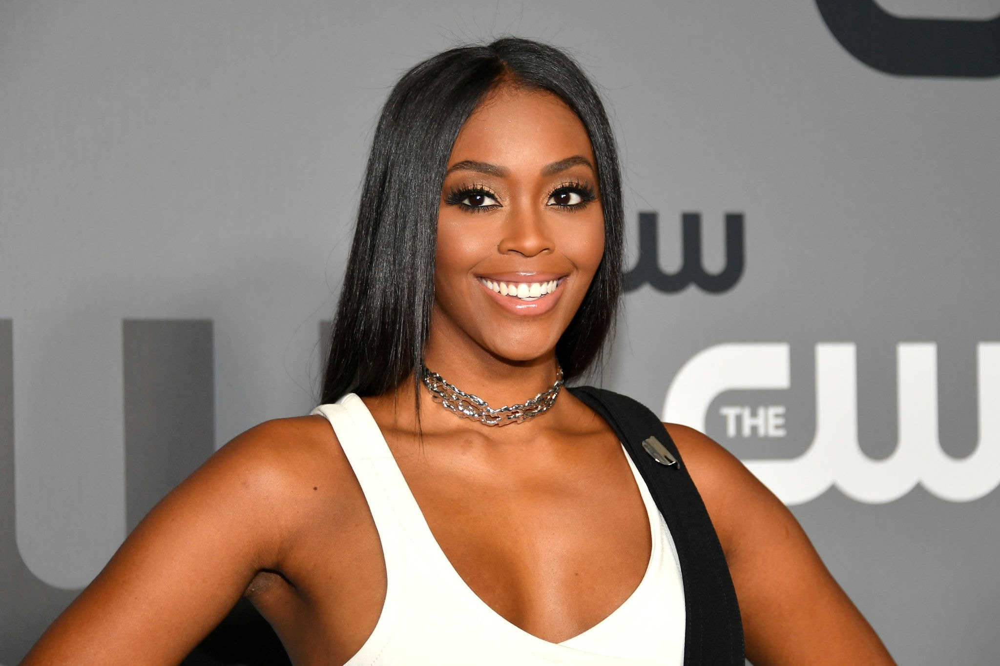
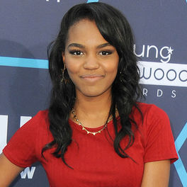

Se centra en Jefferson Pierce. Ha tomado una decisión: colgó el traje y su
identidad secreta años atrás, pero con una hija determinada a hacer justicia
y un estudiante modelo siendo reclutado por una banda local, se sentirá de nuevo
atraído a la batalla como el vigilante buscado y leyenda de DC, Black Lightning.
Team black temporada 1
|
|

|

|
| Jefferson Pierce:(Cress Williams)
Hombre, afroamericano, de treinta y muchos hasta cincuenta. Guapo, en forma, con constitución atlética.
Es un ex-ganador del oro olímpico tres veces en decatlón que ahora es director de un instituto en South
Central Los Angeles. Una figura paterna para sus estudiantes y un héroe para la comunidad local. |
Anissa(China Anne McClain)
Mujer, afroamericana, para interpretar a una chica de 22 años. La hija mayor de Jefferson.
Bella, espabilada e inteligente; intensa y apasionada. Anissa tiene un gran respeto por su padre.
Anissa intenta equilibrar las exigencias de la escuela de medicina con sus obligaciones como profesora
a tiempo parcial en la escuela de Jefferson. Es regular en la serie. |
Jennifer(Nafessa Williams)
Mujer, afroamericana, para interpretar a una chica de 22 años. La hija mayor de Jefferson.
Bella, espabilada e inteligente; intensa y apasionada. Anissa tiene un gran respeto por su
padre. Anissa intenta equilibrar las exigencias de la escuela de medicina con sus obligaciones
como profesora a tiempo parcial en la escuela de Jefferson. Es regular en la serie.
Mujer, afroamericana, con 18 legales para interpretar a una chica de 16 años. Es la hija
pequeña de Jefferson. Jennifer es una atleta escolar; bonita con una figura esbelta y atlética,
de corredora. Es la feminista autorizada de la familia Pierce. Independiente y honesta con un
carácter algo imprevisible. Es regular en la serie. |